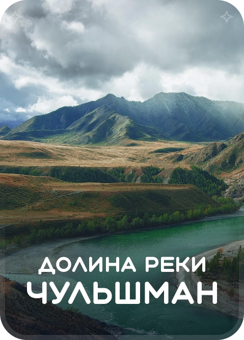
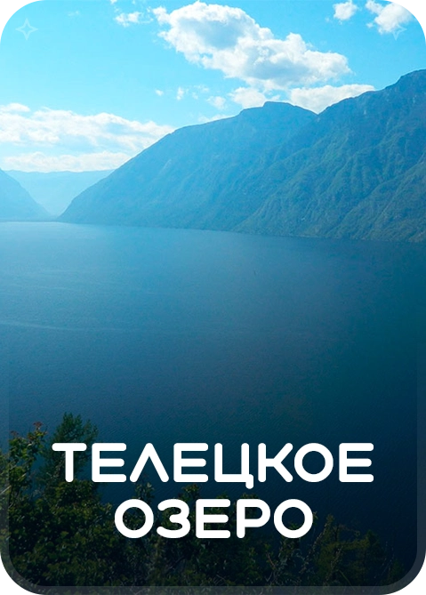
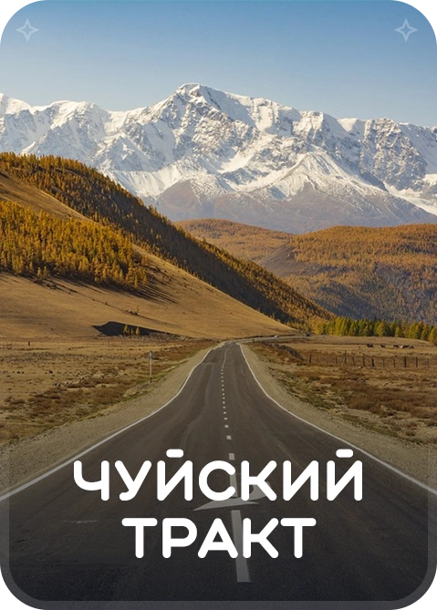

ВСЯ КРАСОТА ГОРНОГО АЛТАЯ
ТУР "ЗОЛОТОЕ КОЛЬЦО АЛТАЯ"
Этот маршрут уникален тем, что всего за десять дней позволит увидеть Алтай во всей своей красе.
В программу включены самые известные, интересные и наиболее доступные места.
Самая удивительная и необычная долина реки Чульшман покоряет своим великолепием.

Телецкое озеро - жемчужина Алтая.

Одна из самых древнейших и красивых автомобильных дорог в мире.
Описание тура
......